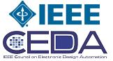

In the news...
In the news...
2016 CAD Contest Website: Click Here
Special Announcement: Congratulations to the Winners of 2015 CAD Contest at ICCAD
Thank you to everyone who participated in 2015 CAD Contest at ICCAD. We are delighted to announce the Top 3 winners of our contest.
Congrats to:
First Place of Problem A
Jian Kuang, Gengjie Chen, Zhiliang Zeng, Hang Zhang– The Chinese University of Hong Kong
Advisor: Prof. Evangeline F.Y. Young, Prof. Bei Yu
Team name: Dawn
Second Place of Problem A
Cheng-Wei Wu, Chi-Hung Hsu, Chih-Hsuan Liu, Yu-Chen Lin– National Tsing Hua University
Advisor: Prof. Shih-Chieh Chang
Team name: CS Cow
Third Place of Problem A
Feng Hu, Yun-Feng Yang –Fudan University
Advisor: Prof. Heng-Liang Zhu, Prof. Xuan Zeng
Team name: Fudan_EDA
First Place of Problem B
Grigorii Antiufeev, Evgeny Zenin, Vladimir Zhukov – Lomonosov Moscow State University
Advisor: Prof. Mikhail Shupletsov
Team name: Lomonosov Moscow State University
Second Place of Problem B
Li-Wei Wang, Ming-Jen Yang, Kuan-Yu Lin, Yi-Hong Lu – National Taiwan University
Advisor: Chung-Yang (Ric) Huang
Team name: c6288
Third Place of Problem B
Yi-Tin Sun, Grace Wu, Wei Fang, Yi-Yao Huang– National Taiwan University
Advisor: Prof. Jie-Hong Roland Jiang
Team name: frEEdom
First Place of Problem C
Vinicius Livramento, Chrystian Guth, Renan Netto – Federal University of Santa Catarina
Advisor: Prof. José Luís Güntzel, Prof. Luiz C. V. dos Santos
Team name: First Place
Second Place of Problem C
Jucemar Monteiro, Mateus Fogaca, Tiago Reimann, Guilherme Flach – Federal University of Rio Grande do Sul
Advisor: Prof. Marcelo Johann, Prof. Ricardo Reis
Team name: UFRGS-Brazil
Third Place of Problem C
Ka-Chun Lam, Wing-Kai Chow, Peishan Tu, Jian Kuang – The Chinese University of Hong Kong
Advisor: Prof. Evangeline F.Y. Young
Team name: CUHK-ITP
Please accept our heartiest congratulations!!
Highlights of the Award Ceremony at ICCAD
The 2015 CAD Contest Award Ceremony was successfully held on November 2, 2015.
Please click to watch the Highlights of 2015 CAD Contest at ICCAD (Download).
You may click the following links to see the Video shows of the Top 3:
1. Video Shows of Problem A (Download)
2. Video Shows of Problem B (Download)
3. Video Shows of Problem C (Download)
You may also click the following links to see the presentations of our contest chair and topic chairs in the Award Ceremony at ICCAD:
1. Introduction to 2015 CAD Contest at ICCAD (Opening)
2. Presentation of Problem A
3. Presentation of Problem B
4. Presentation of Problem C
Call for Participation
The 2015 CAD contest at ICCAD is a challenging, multi-month, research and development competition, focusing on advanced, real-world problems in the field of Electronic Design Automation. The contest is open to multi-person teams world-wide.
Contestants can participate in one or more problems in the three areas of system level design, logic synthesis & verification, and physical design. For more information, including registration details, detailed problem descriptions,
and contest rules please refer to the official con-test website:
http://cad-contest.el.cycu.edu.tw/CAD-contest-at-ICCAD2015/
The CAD contest at ICCAD has been jointly sponsored by IEEE CEDA and Ministry of Education (MOE), Taiwan, since 2012 with the goal of fostering a close working relationship between members of the academia and the industry to advance the state-of-the-art in EDA.
In the past three years it has attracted 56 teams from 7 world-wide regions, 87 teams from 9 regions, and 93 teams from 9 regions. Prior to its internationalization, it was solely sponsored by MOE, Taiwan for 12 consecutive years, tremendously boosting EDA research in Taiwan.
Each year winners are felicitated at an ICCAD special session dedicated to this contest. The contest has also lead to numerous publications in top-tier conferences and journals showcasing the research from the top-performing teams.
YOU ARE INVITED TO PARTICIPATE! Register Here!
Contest Problems
Problem A: 3D-ICON: 3D Interlayer Cooling Optimized Network
Problem B: Large-Scale Equivalence Checking and Function Correction
Problem C: Incremental Timing-driven Placementfont
Tentative Contest Schedule
- Call for participation: February 2015
- Official website open: February 2015
- Problem description announcement: February 2015
- Registration deadline: May 06, 2015 May 24, 2015
- Alpha test submission: June 24 (anywhere on earth),2015
- Beta test submission: July 28, 2015
- Submission deadline: September 01, 2015 September 10, 2015
- Award ceremony: November 2015 November 2, 2015 (in ICCAD-2015 Session 10B)
Awards
The contest winners will receive monetary awards (students only) and certificates.
|
Award |
Team |
Advisor |
|
1st Place
One team for each topic |
1. Certificate of 1st
Place |
Certificate of 1st Place |
|
2nd Place / 3rd Place
Two teams for each
topic |
1. Certificate of
2nd / 3rd Place |
Certificate of 2nd / 3rd Place |
Notes:
|
||
Other Information
- For all inquires, please send an email to: cad.contest.iccad@gmail.com
- All updates will be announced on the official contest website: http://cad-contest.el.cycu.edu.tw/CAD-contest-at-ICCAD2015/
- Archived website for the 2014 CAD contest at ICCAD: http://cad_contest.ee.ncu.edu.tw/CAD-Contest-at-ICCAD2014
Organization
1. Contest chair:
Natarajan Viswanathan (IBM Corporation, USA)
2. Contest co-chairs:
Shih-Hsu Huang (Chung Yuan Christian University, Taiwan)
Rung-Bin Lin (Yuan Ze University, Taiwan)
Myung-Chul Kim (IBM Corporation, USA)
3. Topic chairs:
Problem A: Mohamed M. Sabry (Stanford University, USA), Arvind Sridhar (IBM Zurich, Switzerland), and David Atienza (ESL-EPFL, Switzerland)
Problem B: Jacky Chih-Jen Hsu (Cadence Design Systems Inc., Taiwan)
Problem C: Myung-Chul Kim and Jin Hu (IBM Corporation, USA)
Sponsors:
IEEE CEDA (Technical sponsorship)
Ministry of Education, Taiwan (Financial sponsorship)
National Chip Implementation Center, Taiwan (Technical Sponsorship)
